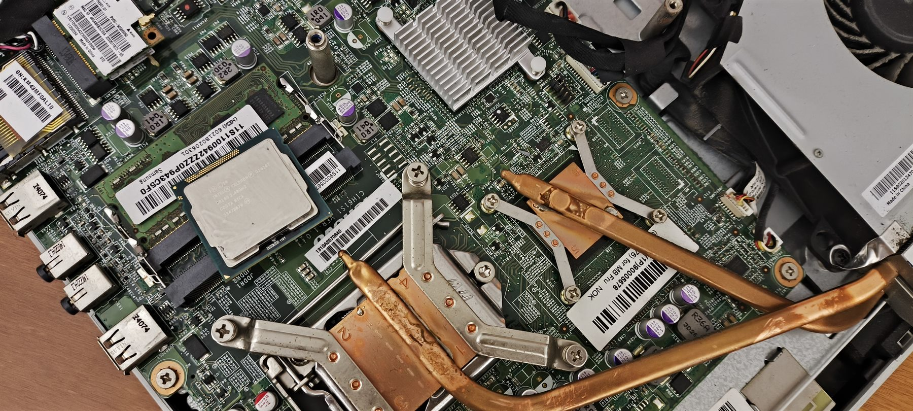

ITX · DIY
The hardware behind the machine
Three collections: the slogans PC brands sell by, the processors behind the machines, and the cards that draw the frames.

ITX · DIY
Three collections: the slogans PC brands sell by, the processors behind the machines, and the cards that draw the frames.